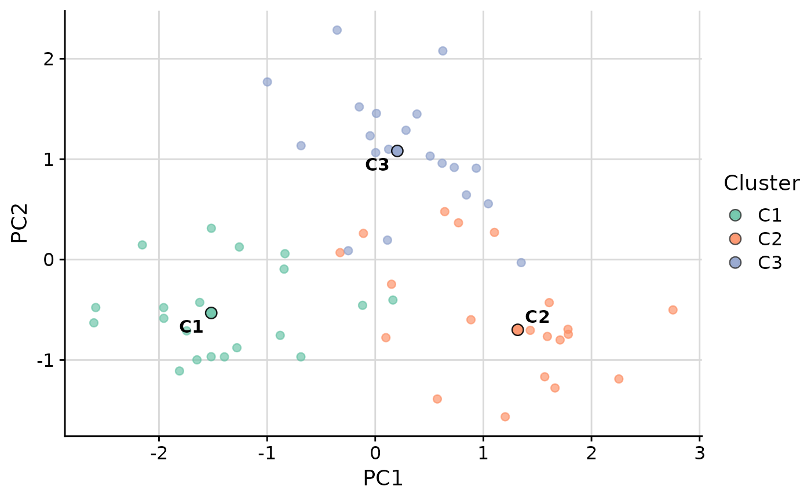
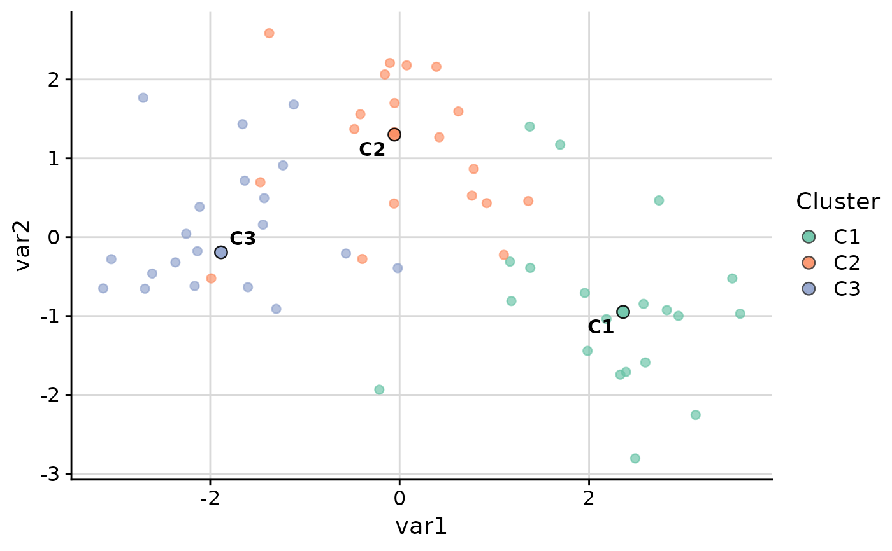
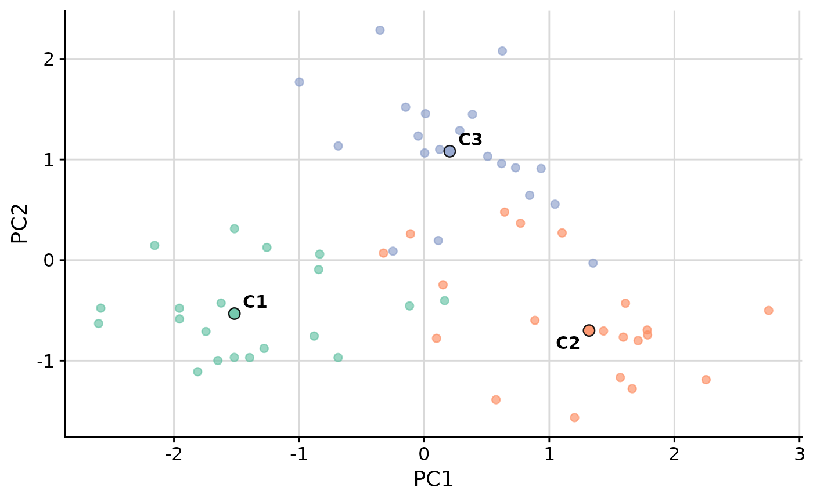

Biaxial scatter plot with cluster medians overlaid
Source:R/plot_cluster_scatter.R
plot_cluster_scatter.RdCreates a biaxial scatter plot with observations colored by cluster assignment. Median cluster centroids are overlaid as large points and labeled with cluster names. The plot can use either raw variables (specified by the user) or dimensionality reduction components as axes.
Usage
plot_cluster_scatter(
.data,
cluster,
dim_red = NULL,
vars = NULL,
point_col_var = NULL,
point_col = NULL,
point_size = 2,
point_alpha = 0.65,
centroid_size = 3,
label_size = 4,
label_offset = 0.3,
ggrepel = TRUE,
font_size = 14,
x_lab = NULL,
y_lab = NULL,
show_legend = TRUE,
thm = cowplot::theme_cowplot(font_size = font_size) + ggplot2::theme(plot.background =
ggplot2::element_rect(fill = "white", colour = NA), panel.background =
ggplot2::element_rect(fill = "white", colour = NA)),
grid = cowplot::background_grid(major = "xy")
)Arguments
- .data
data.frame. Rows are observations. Must contain a column identifying cluster membership and numeric variables.
- cluster
character. Name of the column in
.datathat identifies cluster membership.- dim_red
character or
NULL. Dimensionality reduction method: one of"none","pca","tsne","umap". IfNULL, auto-selects"none"when exactly 2 numeric vars are available, otherwise"pca".- vars
character vector or
NULL. Names of numeric columns in.datato use for the plot or reduction. IfNULL, uses all numeric columns exceptclusterandpoint_col_var.- point_col_var
character or
NULL. Column to use for point colour mapping. Default is same ascluster.- point_col
named vector or NULL. Custom colours for discrete
point_col_var(named by level) or colour bounds for continuouspoint_col_var(length 3 low/mid/high).- point_size
numeric. Size of observation points. Default is
2.- point_alpha
numeric. Alpha transparency for observation points and legend guide. Default is
0.65.- centroid_size
numeric. Size of centroid points. Default is
3.- label_size
numeric. Font size for centroid labels. Default is
4.- label_offset
numeric. Label repulsion padding for centroid labels in cm. Default is
0.3.- ggrepel
logical. Use
ggrepel::geom_text_repelfor centroid labels. Default isTRUE.- font_size
numeric. Font size passed to
cowplot::theme_cowplot. Default is14.- x_lab
character or
NULL. Label for x axis; default uses reduction variable names.- y_lab
character or
NULL. Label for y axis; default uses reduction variable names.- show_legend
logical. Whether to show the legend. Default is
TRUE. Set toFALSEto hide the legend, as centroid labels may suffice.- thm
ggplot2 theme object or
NULL. Default iscowplot::theme_cowplot(font_size = font_size)with white background.- grid
ggplot2 layer or
NULL. Background grid added to the plot. Default iscowplot::background_grid(major = "xy"). Set toNULLto suppress the grid.
Examples
set.seed(1)
data <- data.frame(
cluster = rep(paste0("C", 1:3), each = 20),
var1 = c(rnorm(20, 2), rnorm(20, 0), rnorm(20, -2)),
var2 = c(rnorm(20, -1), rnorm(20, 1), rnorm(20, 0)),
var3 = c(rnorm(20, 1), rnorm(20, -1), rnorm(20, 0))
)
plot_cluster_scatter(data, cluster = "cluster")
#> dim_red automatically set to 'pca' because more than two numeric variables are available.

plot_cluster_scatter(data, cluster = "cluster", dim_red = "none", vars = c("var1", "var2"))

plot_cluster_scatter(data, cluster = "cluster", show_legend = FALSE)
#> dim_red automatically set to 'pca' because more than two numeric variables are available.
